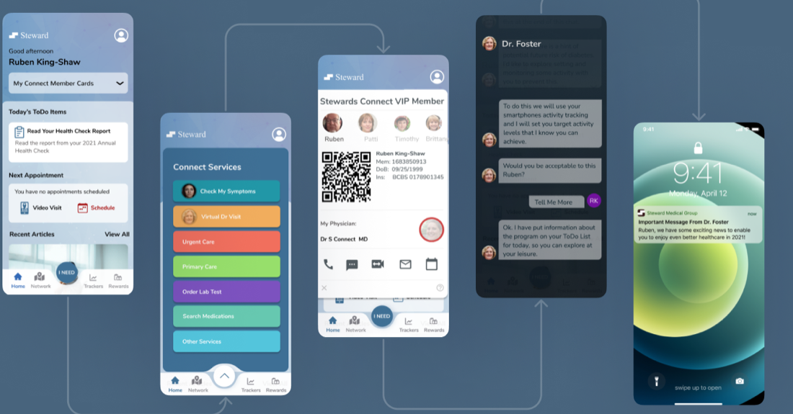
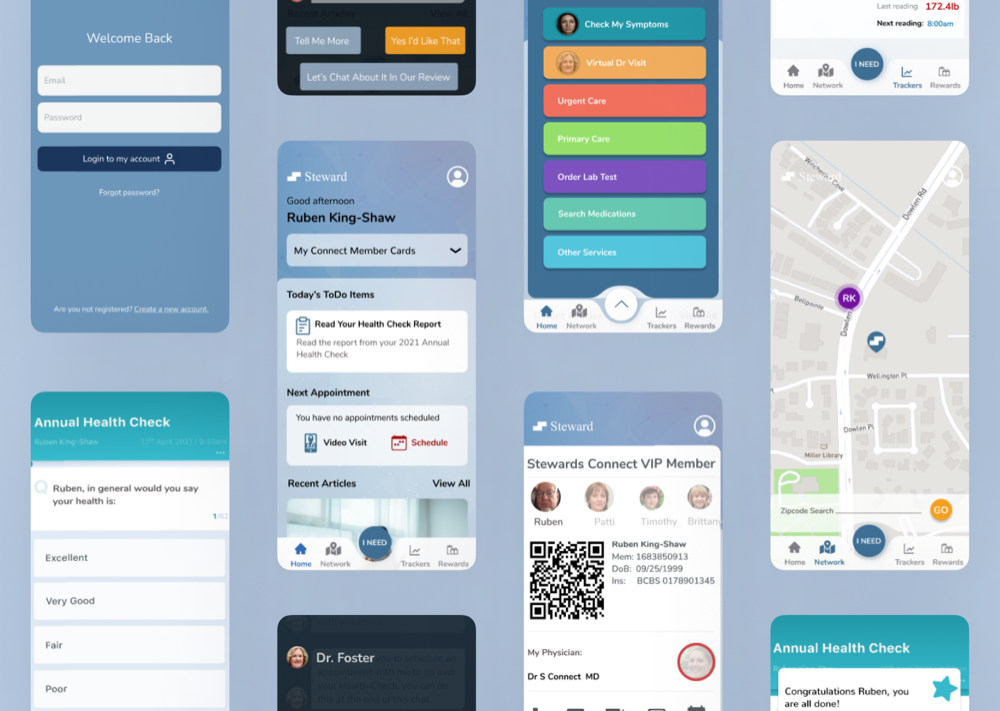
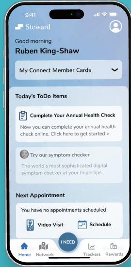
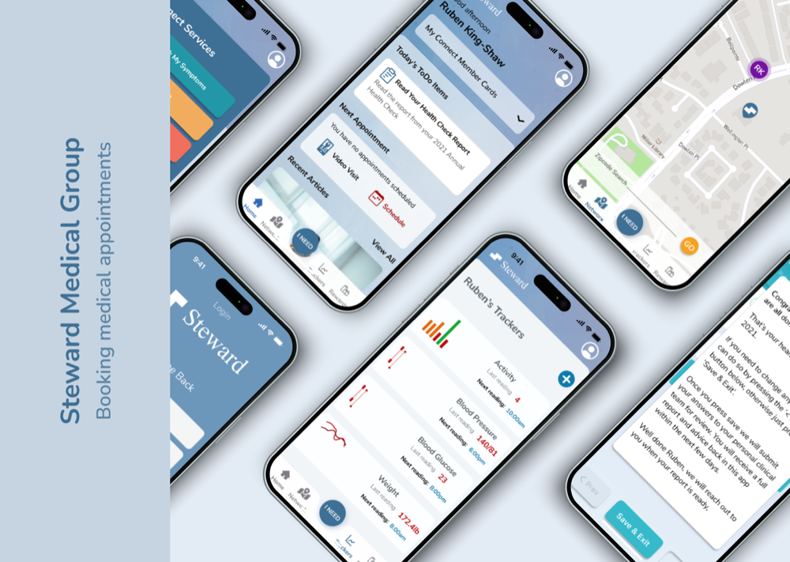

00 · Executive summary10 weeks
A medical appointment app for Steward, a primary and specialized care provider, so patients can book, remember, and prepare for their visits from their phone.
10wk
From discovery to delivery
5,050
Survey responses from 15,000 users
84%
Completed tasks across all studies
85%
Rated it easy and useful
Problem
Few available time slots and complex booking deterred patients, and many forgot or missed their appointments.
Approach
Ten weeks of design thinking: interviews, surveys, personas, a new IA, and 25 unmoderated studies.
Outcome
An app with an “I need” hub, virtual visits, member cards, trackers, reminders, and a hospital map.
Process design · ten weeksFig. A
W1–2W3–4W5–6W7–8W9–10
Empathize
Define
Ideate
Prototype
Testing
Step 01 / 05Weeks 1–2
01
Empathize
GoalCombine business goals and user needs into a strategic vision for the MVP.
Mixed research
- Interviews with frequent patients and doctors on booking, devices, and reminders.
- Survey to 15,000+ users; 27% responded (5,050).
- Four variables: booking device, notification method, ease, and specialties of interest.
Survey results · 5,050 usersFig. B
I'd love the platform to let me book with multiple specialists in one place and see their availability to choose convenient times.
Emma Jones · Patient, 32
It would be fantastic to visualize the real-time availability of my appointments. This would help in coordinating consultations.
Liam Miller · Doctor, 38
MVP
View and book
Availability across providers, with convenient dates.
MVP
Labs and tests
Schedule lab tests and medical exams.
MVP
Medication
Renew prescriptions, reminders, and interactions.
MVP
Basic and premium
A membership with chat, discounts, and more.
Step 02 / 05Weeks 3–4
02
Define
GoalDesign for busy people managing their own care, and their family's.
R
Ryan, 22College student
- Pain
- No time due to his academic workload; needs reminders.
- Uses the app to
- Schedule appointments and get notifications on his phone.
M
Miriam, 32Artist and mother
- Pain
- A busy schedule; worried about missing important dates.
- Uses the app to
- Schedule and track her family's appointments.
User journey · booking a virtual visit
Stage
Login & register
Explore
Pick a virtual visit
Review details
Pre & post visit
Emotion
Confident
Curious
Anxiety
Relief
Satisfied
Pain point
Limited availability
Lost confirmation codes
Unfamiliar doctor; missing info
Forgotten appointments
No post-visit guidance
Opportunity
Flexible scheduling
Code retrieval, clear channels
Doctor profiles and credentials
Timely reminders, rescheduling
Post-visit instructions
Step 03 / 05Weeks 5–6
03
Ideate
GoalFour tabs, with an “I need” hub that gathers every care service in one tap.
Information architectureFig. C
Open Steward→Sign up/Login
HomeMember cards · to doNext appointmentChat with doctor · annual check
I needSymptoms · virtual visitPrimary · urgent careLab tests · medications
NetworkHospital map
TrackersActivity · blood pressureBlood glucose · weight

Step 04 / 05Weeks 7–8
04
Prototype
GoalA calm, trustworthy UI with clear, color-coded services.
I NEED
Every service, one tap
Symptoms, virtual visits, urgent and primary care, labs, and medications.
MEMBER
Connect VIP card
Family members, QR, physician, and quick contact.
CHECK
Annual health check
A guided questionnaire, reviewed by a doctor.
TRACK
Health trackers
Activity, blood pressure, glucose, and weight.
NOTIFY
Push notifications
Reminders and updates so no appointment is missed.
MAP
Hospital location
How close you are and directions to your visit.

Step 05 / 05Weeks 9–10
05
Testing
GoalValidate booking, history, and virtual consultations with a varied group of users.
Unmoderated studies
- 25 studies with users aged 18–55, of different professions and tech levels.
- 3 scenarios: scheduling, medical history, and virtual consultations.
- Data: records, feedback, and suggestions after each study.
COMPLETION
84%
Completed tasks in all studies.
SATISFACTION
85%
Rated it easy to use and useful.
ERRORS
15
Minor errors corrected.
AGE
87%
Of users over 30 booked successfully.
Tracker position on the map→Fixed
Color contrast issues→Adjusted for accessibility
Missing monitoring charts→Medical statistics charts added
06 · ResultsDelivery
06
Booking care, without the friction
OutcomeAn app that lets patients book and manage appointments efficiently, measured by downloads, retention, and ROI.
COMPLETION
84%
Task success across studies.
SATISFACTION
85%
Easy and useful for appointments.
SUCCESS METRICS
Set for launch
Downloads, user retention time, and ROI.
Evidence
Home App Screens Flow


Next case · 21 / 21NTT Pass
→